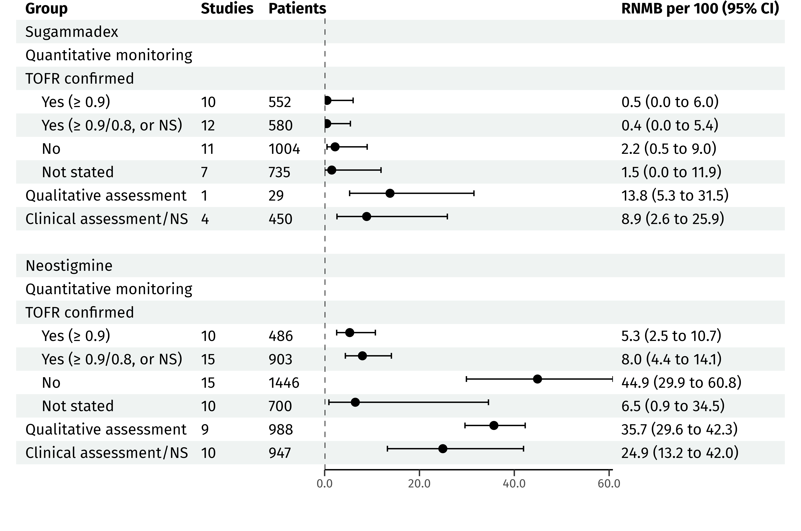
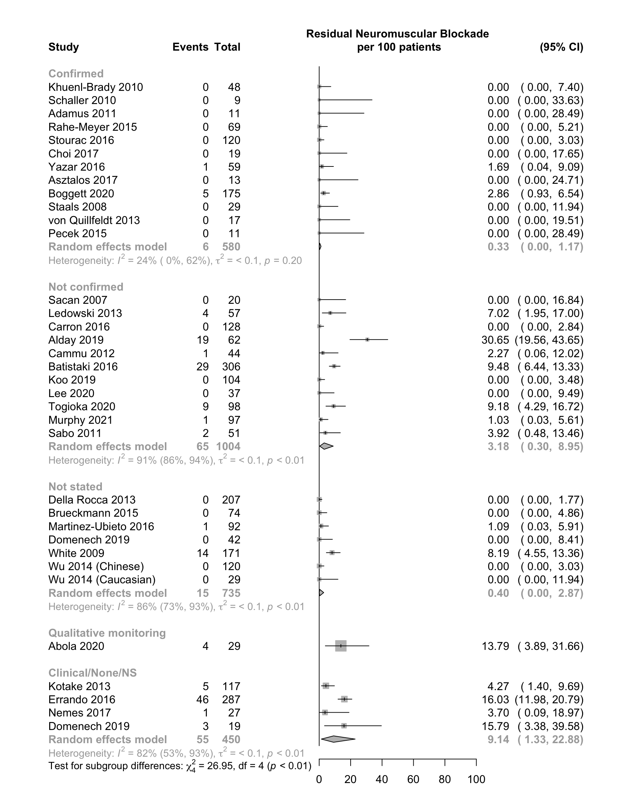
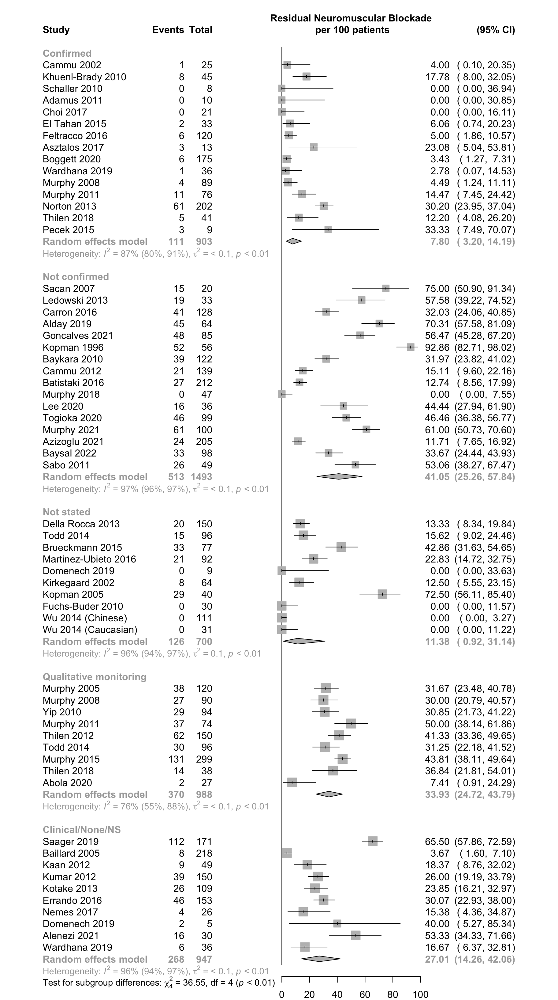

Last updated: 2022-07-06
Checks: 6 1
Knit directory: nmb/
This reproducible R Markdown analysis was created with workflowr (version 1.7.0). The Checks tab describes the reproducibility checks that were applied when the results were created. The Past versions tab lists the development history.
The R Markdown file has unstaged changes. To know which version of
the R Markdown file created these results, you’ll want to first commit
it to the Git repo. If you’re still working on the analysis, you can
ignore this warning. When you’re finished, you can run
wflow_publish to commit the R Markdown file and build the
HTML.
Great job! The global environment was empty. Objects defined in the global environment can affect the analysis in your R Markdown file in unknown ways. For reproduciblity it’s best to always run the code in an empty environment.
The command set.seed(20211025) was run prior to running
the code in the R Markdown file. Setting a seed ensures that any results
that rely on randomness, e.g. subsampling or permutations, are
reproducible.
Great job! Recording the operating system, R version, and package versions is critical for reproducibility.
Nice! There were no cached chunks for this analysis, so you can be confident that you successfully produced the results during this run.
Great job! Using relative paths to the files within your workflowr project makes it easier to run your code on other machines.
Great! You are using Git for version control. Tracking code development and connecting the code version to the results is critical for reproducibility.
The results in this page were generated with repository version dd2a5f6. See the Past versions tab to see a history of the changes made to the R Markdown and HTML files.
Note that you need to be careful to ensure that all relevant files for
the analysis have been committed to Git prior to generating the results
(you can use wflow_publish or
wflow_git_commit). workflowr only checks the R Markdown
file, but you know if there are other scripts or data files that it
depends on. Below is the status of the Git repository when the results
were generated:
Ignored files:
Ignored: .DS_Store
Ignored: .Rhistory
Ignored: .Rproj.user/
Ignored: _@@/
Ignored: analysis/.DS_Store
Ignored: analysis/confirm_sug_era/
Ignored: analysis/index (original).Rmd
Ignored: analysis/kq2 (original 2).Rmd
Ignored: analysis/notes.txt
Ignored: analysis/reversal (original).Rmd
Ignored: analysis/scratch.Rmd
Ignored: analysis/tofr_confirm (modified).Rmd
Ignored: analysis/tofr_confirm (old).Rmd
Ignored: code/helpers.R
Ignored: code/rob_111921 (original).R
Ignored: code/rob_summary.R
Ignored: code/rob_traffic_light.R
Ignored: code/rob_traffic_light_mg.R
Ignored: log.txt
Ignored: used_files_dates.txt
Ignored: used_rob_files_dates.txt
Untracked files:
Untracked: .temp.lb
Untracked: analysis/reversal_cis.Rmd
Untracked: analysis/riskofbias.Rmd
Untracked: analysis/summary_confirm.Rmd
Untracked: code/.gitignore
Untracked: code/footnotes_anesth.R
Untracked: code/misc_calcs.R
Untracked: code/rob_111921.R
Untracked: code/rob_all.R
Untracked: code/rob_by_compare_040922.R
Untracked: code/rob_summary_dmetar_mg.R
Untracked: data/
Untracked: priorToUpdate.RData
Untracked: sugEconomic.txt
Unstaged changes:
Modified: .Rprofile
Modified: .gitignore
Modified: analysis/kq3.Rmd
Modified: analysis/reversal.Rmd
Modified: analysis/tofr_confirm.Rmd
Modified: code/readfiles_nmb_102721.R
Note that any generated files, e.g. HTML, png, CSS, etc., are not included in this status report because it is ok for generated content to have uncommitted changes.
These are the previous versions of the repository in which changes were
made to the R Markdown (analysis/tofr_confirm.Rmd) and HTML
(docs/tofr_confirm.html) files. If you’ve configured a
remote Git repository (see ?wflow_git_remote), click on the
hyperlinks in the table below to view the files as they were in that
past version.
| File | Version | Author | Date | Message |
|---|---|---|---|---|
| html | dd2a5f6 | mdgrant | 2022-07-06 | confirm page |
| Rmd | f280de5 | mdgrant | 2022-07-06 | update confirm |
| html | f280de5 | mdgrant | 2022-07-06 | update confirm |
| Rmd | a7e3ce5 | mdgrant | 2022-04-27 | corrections to soe, confirm table lables |
| html | a7e3ce5 | mdgrant | 2022-04-27 | corrections to soe, confirm table lables |
| html | 46128b9 | mdgrant | 2022-04-26 | fix captions reversal |
| Rmd | baaeb07 | mdgrant | 2022-04-22 | reversal time update, soe add brochospasm, fix bib kq3 |
| html | baaeb07 | mdgrant | 2022-04-22 | reversal time update, soe add brochospasm, fix bib kq3 |
| Rmd | 119b1f3 | mdgrant | 2022-04-18 | update bibs and edits |
| html | 119b1f3 | mdgrant | 2022-04-18 | update bibs and edits |
| Rmd | dce5f58 | mdgrant | 2022-04-08 | update confirm |
| html | dce5f58 | mdgrant | 2022-04-08 | update confirm |
| html | 3f6b2ef | mdgrant | 2022-04-08 | remove visual |
| html | 80888b5 | mdgrant | 2022-04-07 | fix neo visual confirm |
| Rmd | e2cb660 | mdgrant | 2022-04-07 | reversal soe updates figs confirm |
| html | e2cb660 | mdgrant | 2022-04-07 | reversal soe updates figs confirm |
| Rmd | 7d275c8 | mdgrant | 2022-04-07 | update confirm |
| html | 7d275c8 | mdgrant | 2022-04-07 | update confirm |
| Rmd | 00c5c96 | mdgrant | 2022-04-05 | edits for clarity |
| html | 00c5c96 | mdgrant | 2022-04-05 | edits for clarity |
| Rmd | 7ef38b3 | mdgrant | 2022-04-05 | update kq3 and confirm |
| html | 7ef38b3 | mdgrant | 2022-04-05 | update kq3 and confirm |
| Rmd | 2362811 | mdgrant | 2022-04-04 | updates reversal tables meta summaries |
| html | 2362811 | mdgrant | 2022-04-04 | updates reversal tables meta summaries |
| Rmd | 50b7ce0 | mdgrant | 2022-03-31 | misc updates kq3 confirm |
| Rmd | 4d46aa4 | mdgrant | 2022-03-30 | update soe |
| html | 4d46aa4 | mdgrant | 2022-03-30 | update soe |
| Rmd | 605d234 | mdgrant | 2022-03-30 | add links confirm |
| html | 605d234 | mdgrant | 2022-03-30 | add links confirm |
| Rmd | d1f3195 | mdgrant | 2022-03-30 | update confirm |
| html | d1f3195 | mdgrant | 2022-03-30 | update confirm |
| Rmd | 0c97ba1 | mdgrant | 2022-03-30 | add domenech 2019 |
| html | 0c97ba1 | mdgrant | 2022-03-30 | add domenech 2019 |
| Rmd | cd5364b | mdgrant | 2022-03-29 | fixed toc confirm |
| html | cd5364b | mdgrant | 2022-03-29 | fixed toc confirm |
| Rmd | ae8955d | mdgrant | 2022-03-29 | Edits to confirm |
| html | ae8955d | mdgrant | 2022-03-29 | Edits to confirm |
| Rmd | 607cef6 | mdgrant | 2022-03-29 | fix headers |
| html | 607cef6 | mdgrant | 2022-03-29 | fix headers |
| Rmd | 981a573 | mdgrant | 2022-03-29 | update confirm |
| html | 981a573 | mdgrant | 2022-03-29 | update confirm |
| Rmd | 2e927c6 | mdgrant | 2022-03-24 | udpate confirm analyses |
| html | 2e927c6 | mdgrant | 2022-03-24 | udpate confirm analyses |
| Rmd | e2a5004 | mdgrant | 2022-03-21 | add risk ratios edit |
| html | e2a5004 | mdgrant | 2022-03-21 | add risk ratios edit |
| Rmd | c7e2c17 | mdgrant | 2022-03-21 | add risk ratios confirm vs not |
| html | c7e2c17 | mdgrant | 2022-03-21 | add risk ratios confirm vs not |
| Rmd | 668cb81 | mdgrant | 2022-03-21 | udpate confirm |
| html | 668cb81 | mdgrant | 2022-03-21 | udpate confirm |
| Rmd | 334deaf | mdgrant | 2022-03-21 | updates to footnotes |
| html | 334deaf | mdgrant | 2022-03-21 | updates to footnotes |
| Rmd | 14e199f | mdgrant | 2022-03-21 | delete duplicated refid 2725 |
| html | 14e199f | mdgrant | 2022-03-21 | delete duplicated refid 2725 |
| Rmd | cca8930 | mdgrant | 2022-03-20 | summaries, confirm updates |
| html | cca8930 | mdgrant | 2022-03-20 | summaries, confirm updates |
| Rmd | 91946c1 | mdgrant | 2022-03-16 | reversal confirmation soe and updates |
| Rmd | 67c6be9 | mdgrant | 2022-03-13 | cofirm updates |
| html | 67c6be9 | mdgrant | 2022-03-13 | cofirm updates |
| Rmd | c366808 | mdgrant | 2022-03-11 | update caption |
| html | c366808 | mdgrant | 2022-03-11 | update caption |
| Rmd | 8fc8cbd | mdgrant | 2022-03-11 | update confirm tofr |
| html | 8fc8cbd | mdgrant | 2022-03-11 | update confirm tofr |
| html | 6b588b3 | mdgrant | 2022-03-11 | add tofr confirmation |
Figure 1. Residual neuromuscular blockade (TOFR < 0.9, pooled incidence proportion) in arms of randomized and nonrandomized studies according to type of monitoring and confirmation of TOFR prior to extubation.

RNMB: residual neuromuscular blockade (TOFR < 0.9); NS: not stated.
Table 1. Residual neuromuscular blockade in study arms according to TOFR confirmation prior to extubation when quantitative monitoring was used and in studies where quantitative monitoring was not used. Sugammadex given for reversal.
| Study | Design | N | Agent | Volatile | Depth | Placea | N (%) | 0% → 100% |
|---|---|---|---|---|---|---|---|---|
| Quantitative monitoring | ||||||||
| Confirmed ≥ 0.9 | ||||||||
| Khuenl-Brady 2010 | RCT | 48 | Vec | × | Mod | Extubation | 0 (0.0) | |
| Schaller 2010 | RCT | 9 | Roc | Min | Extubation | 0 (0.0) | ||
| Adamus 2011 | RCT | 11 | Roc | Mod | Extubation | 0 (0.0) | ||
| Rahe-Meyer 2015 | RCT | 69 | Roc | Deep | Extubation | 0 (0.0) | ||
| Stourac 2016 | RCT | 120 | Roc | × | Deep:Mod | Extubation | 0 (0.0) | |
| Choi 2017 | RCT | 19 | Roc | End surgery | Extubation | 0 (0.0) | ||
| Yazar 2016 | NR Trial | 59 | Roc | × | Mod | PACU | 1 (1.7) | |
| Asztalos 2017 | RCT | 13 | Vec | × | Shallow | PACU | 0 (0.0) | |
| Boggett 2020 | RCT | 175 | Roc | × | Deep:Mod | PACU | 5 (2.9) | |
| Staals 2008 | RCT | 29 | Roc | Mod | NS | 0 (0.0) | ||
| Confirmed ≥ 0.8/NS | ||||||||
| von Quillfeldt 2013 | NR Trial | 17 | Roc | Deep:Mod | PACU | 0 (0.0) | ||
| Pecek 2015 | NR Trial | 11 | Vec | × | Deep:Mod:Shallow | NS | 0 (0.0) | |
| Not confirmed | ||||||||
| Sacan 2007 | RCT | 20 | Roc | × | Other | Extubation | 0 (0.0) | |
| Ledowski 2013 | Prosp Cohort | 57 | Var | × | End surgery | Extubation | 4 (7.0) | |
| Carron 2016 | Retro Cohort | 128 | Roc | NS | Extubation | 0 (0.0) | ||
| Alday 2019 | RCT | 62 | Roc | NS | Extubation | 19 (30.6) | ||
| Cammu 2012 | Prosp Cohort | 44 | Roc | NS | PACU | 1 (2.3) | ||
| Batistaki 2016 | Prosp Cohort | 306 | Roc | NS | PACU | 29 (9.5) | ||
| Koo 2019 | RCT | 104 | Roc | × | Deep:Mod | PACU | 0 (0.0) | |
| Lee 2020 | RCT | 37 | Roc | Deep:Mod | PACU | 0 (0.0) | ||
| Togioka 2020 | RCT | 98 | Roc | × | Mod | PACU | 9 (9.2) | |
| Murphy 2021 | NR Trial | 97 | Roc | × | Other | PACU | 1 (1.0) | |
| Sabo 2011 | RCT | 51 | Roc | × | Deep | NS | 2 (3.9) | |
| Not stated | ||||||||
| Della Rocca 2013 | NR Trial | 207 | Roc | × | Deep:Mod | Extubation | 0 (0.0) | |
| Brueckmann 2015 | RCT | 74 | Roc | × | NS | PACU | 0 (0.0) | |
| Martinez-Ubieto 2016 | Prosp Cohort | 92 | Roc | × | Min | PACU | 1 (1.1) | |
| Domenech 2019 | Retro Cohort | 42 | Var | NS | PACU | 0 (0.0) | ||
| White 2009 | Retro Cohort | 171 | Roc | × | Deep:Mod | NS | 14 (8.2) | |
| Wu 2014 (Chinese) | RCT | 120 | Roc | Mod | NS | 0 (0.0) | ||
| Wu 2014 (Caucasian) | RCT | 29 | Roc | Mod | NS | 0 (0.0) | ||
| Qualitative monitoring | ||||||||
| Abola 2020 | RCT | 29 | Roc | End surgery | PACU | 4 (13.8) | ||
| Clinical/None/NS | ||||||||
| Kotake 2013 | Prosp Cohort | 117 | Roc | × | End surgery | PACU | 5 (4.3) | |
| Errando 2016 | Prosp Cohort | 287 | Var | × | NS | PACU | 46 (16.0) | |
| Nemes 2017 | RCT | 27 | Roc | × | End surgery | PACU | 1 (3.7) | |
| Domenech 2019 | Retro Cohort | 19 | Var | NS | PACU | 3 (15.8) | ||
| RCT: randomized controlled trial; NR Trial: nonrandomized trial; Prosp Cohort: prospective cohort; Retro Cohort: retrospective cohort; ROC: rocuronium; Vec: vecuronium; Var: various; Min: minimal; Mod: moderate; NS: not stated; PACU: post-anesthesia care unit; NS: not stated. | ||||||||
| a Extubation includes designated in OR. | ||||||||
Figure 2. Incidence of residual neuromuscular blockade (TOFR <0.9) in arms of randomized and nonrandomized studies using quantitative monitoring according to whether TOFR ≥0.9 was reported as confirmed prior to extubation (reversal with sugammadex).

Risk Ratios
| Comparison | RR (95% CI) |
|---|---|
| Confirmed vs. not confirmed | 0.07 (0.00, 0.65) |
| Removing Alday 2019 | 0.21 (0.00, 1.81) |
| Assuming all not stated were confirmed | 0.09 (0.00, 0.77) |
| Assuming all not stated were not confirmed | 0.12 (0.00, 1.09) |
Risk ratios obtained as the ratio (median, lower and upper 0.025 quantiles) sampled from the means and standard deviations of the respective comparator incidence proportions (1E6 samples). Arms from von Quillfeldt 2013 and Pecek 2015 confirmed at TOFR ≥ 0.8. E-value point estimate of 28.1 (upper limit 2.4) for the main result.
Table 2. Residual neuromuscular blockade in study arms according to TOFR confirmation prior to extubation when quantitative monitoring was used and in studies where quantitative monitoring was not used. Neostigmine given for reversal.
| Study | Design | N | Agent | Volatile | Depth | Placea | N (%) | 0% → 100% |
|---|---|---|---|---|---|---|---|---|
| Quantitative monitoring | ||||||||
| Confirmed ≥ 0.9 | ||||||||
| Cammu 2002 | RCT | 25 | Var | Min | Extubation | 1 (4.0) | ||
| Khuenl-Brady 2010 | RCT | 45 | Vec | × | Mod | Extubation | 8 (17.8) | |
| Schaller 2010 | RCT | 8 | Roc | Min | Extubation | 0 (0.0) | ||
| Adamus 2011 | RCT | 10 | Roc | Mod | Extubation | 0 (0.0) | ||
| Choi 2017 | RCT | 21 | Roc | End surgery | Extubation | 0 (0.0) | ||
| El Tahan 2015 | RCT | 33 | Cis | × | Shallow | PACU | 2 (6.1) | |
| Feltracco 2016 | RCT | 120 | Var | Shallow | PACU | 6 (5.0) | ||
| Asztalos 2017 | RCT | 13 | Vec | × | Shallow | PACU | 3 (23.1) | |
| Boggett 2020 | RCT | 175 | Roc | × | Mod | PACU | 6 (3.4) | |
| Wardhana 2019 | RCT | 36 | Roc | × | Mod | Recovery | 1 (2.8) | |
| Confirmed ≥ 0.8/NS | ||||||||
| Murphy 2008 | RCT | 89 | Roc | × | Mod | PACU | 4 (4.5) | |
| Murphy 2011 | RCT | 76 | Roc | × | Mod | PACU | 11 (14.5) | |
| Norton 2013 | Prosp Cohort | 202 | Var | Other:oth | PACU | 61 (30.2) | ||
| Thilen 2018 | Before-After | 41 | Roc | Shallow | PACU | 14 (34.1) | ||
| Pecek 2015 | NR Trial | 9 | Vec | × | Deep:Mod:Shallow | NS | 3 (33.3) | |
| Not confirmed | ||||||||
| Sacan 2007 | RCT | 20 | Roc | × | Other | Extubation | 15 (75.0) | |
| Ledowski 2013 | Prosp Cohort | 33 | Var | × | End surgery | Extubation | 19 (57.6) | |
| Carron 2016 | Retro Cohort | 128 | Roc | NS | Extubation | 41 (32.0) | ||
| Alday 2019 | RCT | 64 | Roc | NS | Extubation | 45 (70.3) | ||
| Goncalves 2021 | Prosp Cohort | 85 | Var | Mod:Shallow:Min | Extubation | 48 (56.5) | ||
| Kopman 1996 | NR Trial | 56 | Pan | × | Mod | PACU | 52 (92.9) | |
| Baykara 2010 | Fully Paired | 122 | Roc | End surgery | PACU | 39 (32.0) | ||
| Cammu 2012 | Prosp Cohort | 139 | Roc | NS | PACU | 21 (15.1) | ||
| Batistaki 2016 | Prosp Cohort | 212 | Roc | NS | PACU | 27 (12.7) | ||
| Murphy 2018 | RCT | 47 | Roc | × | Min | PACU | 0 (0.0) | |
| Lee 2020 | RCT | 36 | Roc | Mod:Shallow:Min | PACU | 16 (44.4) | ||
| Togioka 2020 | RCT | 99 | Roc | × | Mod | PACU | 46 (46.5) | |
| Murphy 2021 | NR Trial | 100 | Roc | × | Other | PACU | 61 (61.0) | |
| Azizoglu 2021 | Prosp Cohort | 205 | Roc | × | NS | PACU | 24 (11.7) | |
| Baysal 2022 | RCT | 98 | Roc | × | Mod | PACU | 33 (33.7) | |
| Sabo 2011 | RCT | 49 | Roc | × | Deep | NS | 26 (53.1) | |
| Not stated | ||||||||
| Della Rocca 2013 | NR Trial | 150 | Roc | × | Deep:Mod | Extubation | 20 (13.3) | |
| Todd 2014 | Before-After | 96 | Var | NS | PACU | 15 (15.6) | ||
| Brueckmann 2015 | RCT | 77 | Roc | × | NS | PACU | 33 (42.9) | |
| Martinez-Ubieto 2016 | Prosp Cohort | 92 | Cis | × | Min | PACU | 21 (22.8) | |
| Domenech 2019 | Retro Cohort | 9 | Var | NS | PACU | 0 (0.0) | ||
| Kirkegaard 2002 | RCT | 64 | Cis | Mod:Shallow:mod | NS | 8 (12.5) | ||
| Kopman 2005 | RCT | 40 | Var | × | End surgery | NS | 29 (72.5) | |
| Fuchs-Buder 2010 | RCT | 30 | Atr | Min:min | NS | 0 (0.0) | ||
| Wu 2014 (Chinese) | RCT | 111 | Roc | Mod | NS | 0 (0.0) | ||
| Wu 2014 (Caucasian) | RCT | 31 | Roc | Mod | NS | 0 (0.0) | ||
| Qualitative monitoring | ||||||||
| Murphy 2005 | Prosp Cohort | 120 | Roc | × | PACU | 38 (31.7) | ||
| Murphy 2008 | RCT | 90 | Roc | × | Mod | PACU | 27 (30.0) | |
| Yip 2010 | Prosp Cohort | 94 | Var | Min | PACU | 29 (30.9) | ||
| Murphy 2011 | RCT | 74 | Roc | × | Mod | PACU | 37 (50.0) | |
| Thilen 2012 | Prosp Cohort | 150 | Var | NS:ns | PACU | 62 (41.3) | ||
| Todd 2014 | Before-After | 96 | Var | NS | PACU | 30 (31.2) | ||
| Murphy 2015 | RCT | 299 | Roc | × | Mod | PACU | 131 (43.8) | |
| Thilen 2018 | Before-After | 38 | Vec | Shallow | PACU | 5 (13.2) | ||
| Abola 2020 | RCT | 27 | Roc | End surgery | PACU | 2 (7.4) | ||
| Clinical/None/NS | ||||||||
| Saager 2019 | Prosp Cohort | 171 | Var | NS | Extubation | 112 (65.5) | ||
| Baillard 2005 | Before-After | 218 | Var | × | NS | PACU | 8 (3.7) | |
| Kaan 2012 | Prosp Cohort | 49 | Var | NS | PACU | 9 (18.4) | ||
| Kumar 2012 | RCT | 150 | Var | × | End surgery | PACU | 39 (26.0) | |
| Kotake 2013 | Prosp Cohort | 109 | Roc | × | End surgery | PACU | 26 (23.9) | |
| Errando 2016 | Prosp Cohort | 153 | Var | × | NS | PACU | 46 (30.1) | |
| Nemes 2017 | RCT | 26 | Roc | × | End surgery | PACU | 4 (15.4) | |
| Domenech 2019 | Retro Cohort | 5 | Var | NS | PACU | 2 (40.0) | ||
| Alenezi 2021 | Prosp Cohort | 30 | Var | NS | PACU | 16 (53.3) | ||
| Wardhana 2019 | RCT | 36 | Roc | × | clincrit | Recovery | 6 (16.7) | |
| RCT: randomized controlled trial; NR Trial: nonrandomized trial; Prosp Cohort: prospective cohort; Retro Cohort: retrospective cohort; ROC: rocuronium; Vec: vecuronium; Var: various; Min: minimal; Mod: moderate; NS: not stated; PACU: post-anesthesia care unit; NS: not stated. | ||||||||
| a Extubation includes designated in OR. | ||||||||
Figure 3. Incidence of residual neuromuscular blockade (TOFR <0.9) in arms of randomized and nonrandomized studies using quantitative monitoring according to whether TOFR ≥0.9 was reported as confirmed prior to extubation (reversal with Neostigmine).

Risk Ratios
| Comparison | RR (95% CI) |
|---|---|
| Confirmed vs. not confirmed | 0.22 (0.09, 0.44) |
| Assuming all not stated were confirmed | 0.24 (0.10, 0.48) |
| Assuming all not stated were not confirmed | 0.31 (0.12, 0.68) |
Risk ratios obtained as the ratio (median, lower and upper 0.025 quantiles) sampled from the means and standard deviations of the respective comparator incidence proportions (1E6 samples). Arms from Murphy 2008, Murphy 2011, Norton 2013, Thilen 2018, and Pecek 2015 confirmed at TOFR ≥ 0.8 or was not stated. E-value point estimate of 8.6 (upper limit 4.0) for the main result.
R version 4.2.0 (2022-04-22)
Platform: x86_64-apple-darwin17.0 (64-bit)
Running under: macOS Big Sur/Monterey 10.16
Matrix products: default
BLAS: /Library/Frameworks/R.framework/Versions/4.2/Resources/lib/libRblas.0.dylib
LAPACK: /Library/Frameworks/R.framework/Versions/4.2/Resources/lib/libRlapack.dylib
locale:
[1] en_US.UTF-8/en_US.UTF-8/en_US.UTF-8/C/en_US.UTF-8/en_US.UTF-8
attached base packages:
[1] stats graphics grDevices utils datasets methods base
other attached packages:
[1] gtsummary_1.6.1 meta_5.2-0 formattable_0.2.1 naniar_0.6.1
[5] forcats_0.5.1 stringr_1.4.0 dplyr_1.0.9 purrr_0.3.4
[9] readr_2.1.2 tidyr_1.2.0 tibble_3.1.7 ggplot2_3.3.6
[13] tidyverse_1.3.1 Cairo_1.5-15 countrycode_1.4.0 janitor_2.1.0
[17] kableExtra_1.3.4
loaded via a namespace (and not attached):
[1] nlme_3.1-158 fs_1.5.2 bit64_4.0.5
[4] lubridate_1.8.0 webshot_0.5.3 httr_1.4.3
[7] rprojroot_2.0.3 tools_4.2.0 backports_1.4.1
[10] bslib_0.3.1 metafor_3.4-0 utf8_1.2.2
[13] R6_2.5.1 DBI_1.1.3 colorspace_2.0-3
[16] withr_2.5.0 tidyselect_1.1.2 bit_4.0.4
[19] compiler_4.2.0 git2r_0.30.1 cli_3.3.0
[22] rvest_1.0.2 gt_0.6.0 xml2_1.3.3
[25] sass_0.4.1 scales_1.2.0 systemfonts_1.0.4
[28] digest_0.6.29 minqa_1.2.4 rmarkdown_2.14
[31] svglite_2.1.0 pkgconfig_2.0.3 htmltools_0.5.2
[34] lme4_1.1-29 highr_0.9 dbplyr_2.2.1
[37] fastmap_1.1.0 htmlwidgets_1.5.4 rlang_1.0.3
[40] readxl_1.4.0 rstudioapi_0.13 jquerylib_0.1.4
[43] generics_0.1.2 jsonlite_1.8.0 vroom_1.5.7
[46] magrittr_2.0.3 metadat_1.2-0 Matrix_1.4-1
[49] Rcpp_1.0.8.3 munsell_0.5.0 fansi_1.0.3
[52] lifecycle_1.0.1 visdat_0.5.3 stringi_1.7.6
[55] whisker_0.4 yaml_2.3.5 CompQuadForm_1.4.3
[58] snakecase_0.11.0 mathjaxr_1.6-0 MASS_7.3-57
[61] grid_4.2.0 parallel_4.2.0 promises_1.2.0.1
[64] crayon_1.5.1 lattice_0.20-45 haven_2.5.0
[67] splines_4.2.0 hms_1.1.1 knitr_1.39
[70] pillar_1.7.0 boot_1.3-28 reprex_2.0.1
[73] glue_1.6.2 evaluate_0.15 broom.helpers_1.7.0
[76] modelr_0.1.8 nloptr_2.0.3 vctrs_0.4.1
[79] tzdb_0.3.0 httpuv_1.6.5 cellranger_1.1.0
[82] gtable_0.3.0 assertthat_0.2.1 xfun_0.31
[85] broom_1.0.0 later_1.3.0 viridisLite_0.4.0
[88] workflowr_1.7.0 ellipsis_0.3.2